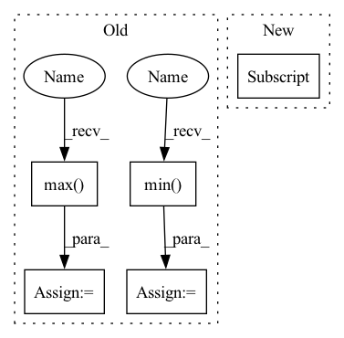

Pattern ID :16487

Before Change
if fixed_size is not None:
size = [fixed_size[1], fixed_size[0]]
else:
min_size = torch.min(im_shape).to(dtype=torch.float32)
max_size = torch.max(im_shape).to(dtype=torch.float32)
scale = torch.min(self_min_size / min_size, self_max_size / max_size)
if torchvision._is_tracing():
After Change
ratio = torch.min(new_shape[0] / im_shape[0], new_shape[1] / im_shape[1])
ratio_h = torch.round(im_shape[0] * ratio).to(dtype=torch.int32)
ratio_w = torch.round(im_shape[1] * ratio).to(dtype=torch.int32)
if torchvision._is_tracing():
new_unpad = _tracing_item_onnx(ratio_h), _tracing_item_onnx(ratio_w)
In pattern: SUPERPATTERN
Frequency: 3
Non-data size: 5
Instances
Fragment ID: 55417276
Project Name: zhiqwang/yolov5-rt-stack
Commit Name: cd1a6ec7cda09de0dc92962a37ecb4f723a8dfeb
Time: 2022-02-03
Author: 92794867+q3394101@users.noreply.github.com
File Name: yolort/models/transform.py
M Class Name: AnonimousClass
N Class Name: AnonimousClass
M Method Name: _resize_image_and_masks(3)
N Method Name: _resize_image_and_masks(5)
M Parent Class:
N Parent Class:
M File Name: yolort/models/transform.py
N File Name: yolort/models/transform.py
M Start Line: 257
M End Line: 286
N Start Line: 67
N End Line: 77
'>
Before Change
)
B, C, H, W = gcam.shape
gcam = gcam.view(B, -1)
gcam -= gcam.min(dim=1, keepdim=True)[0]
gcam /= gcam.max(dim=1, keepdim=True)[0]
gcam = gcam.view(B, C, H, W)
return gcam
After Change
fmaps, weights = self.select_highest_layer()
gcam = []
for i in range(self.logits.shape[0]):
gcam.append(self.generate_helper(fmaps[i].unsqueeze(0), weights[i].unsqueeze(0)))
else:
fmaps = self._find(self.fmap_pool, target_layer)
grads = self._find(self.grad_pool, target_layer)
'>
Fragment ID: 55417263
Project Name: karol-g/gcam
Commit Name: 4d3673129f7f35d0b6ea05944a037268b4da45b2
Time: 2020-01-02
Author: KarolGotkowski@gmx.de
File Name: evaluation_models/grad_cam/grad_cam.py
M Class Name: GradCAM
N Class Name: GradCAM
M Method Name: generate(2)
N Method Name: generate(2)
M Parent Class: _BaseWrapper
N Parent Class: _BaseWrapper
M File Name: evaluation_models/grad_cam/grad_cam.py
N File Name: evaluation_models/grad_cam/grad_cam.py
M Start Line: 209
M End Line: 228
N Start Line: 231
N End Line: 244
'>
Before Change
if fixed_size is not None:
size = [fixed_size[1], fixed_size[0]]
else:
min_size = torch.min(im_shape).to(dtype=torch.float32)
max_size = torch.max(im_shape).to(dtype=torch.float32)
scale = torch.min(self_min_size / min_size, self_max_size / max_size)
if torchvision._is_tracing():
After Change
else:
im_shape = torch.tensor(image.shape[-2:])
ratio = torch.min(new_shape[0] / im_shape[0], new_shape[1] / im_shape[1])
ratio_h = torch.round(im_shape[0] * ratio).to(dtype=torch.int32)
ratio_w = torch.round(im_shape[1] * ratio).to(dtype=torch.int32)
'>
Fragment ID: 55417256
Project Name: zhiqwang/yolov5-rt-stack
Commit Name: cd1a6ec7cda09de0dc92962a37ecb4f723a8dfeb
Time: 2022-02-03
Author: 92794867+q3394101@users.noreply.github.com
File Name: yolort/models/transform.py
M Class Name: AnonimousClass
N Class Name: AnonimousClass
M Method Name: _resize_image_and_masks(3)
N Method Name: _resize_image_and_masks(5)
M Parent Class:
N Parent Class:
M File Name: yolort/models/transform.py
N File Name: yolort/models/transform.py
M Start Line: 257
M End Line: 286
N Start Line: 67
N End Line: 77
'>
Before Change
avg_last_hidden_test)
// Scale Data
domain = np.max(avg_test_var) - np.min(avg_test_var)
// Shift.
avg_test_var = avg_test_var - np.min(avg_test_var)
// Scale domain to 1.
avg_test_var = avg_test_var / domain
// Apply log scale and flip.
avg_test_var = np.maximum(
After Change
// 0, -np.log(avg_test_var + np.exp(-10)))
predictions[:, task:task + 1] = avg_test_preds
confidence[:, task:task + 1] = avg_test_var
predictions = self.scaler.inverse_transform(predictions)
confidence = (self.scaler.inverse_transform(predictions +
'>
Fragment ID: 55417271
Project Name: aamini/chemprop
Commit Name: 63fcc59dcdf5c1b632996f3d2a1119051ab17761
Time: 2019-09-30
Author: liortulip@gmail.com
File Name: chemprop/train/confidence_estimator.py
M Class Name: GaussianProcessEstimator
N Class Name: GaussianProcessEstimator
M Method Name: compute_confidence(2)
N Method Name: compute_confidence(2)
M Parent Class: DroppingEstimator
N Parent Class: DroppingEstimator
M File Name: chemprop/train/confidence_estimator.py
N File Name: chemprop/train/confidence_estimator.py
M Start Line: 121
M End Line: 128
N Start Line: 133
N End Line: 139